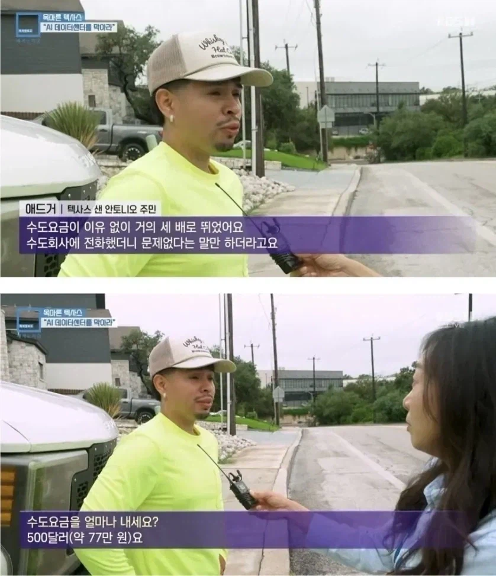

전기값 물값 올리고
고용 효과는 거의 없으면서
이런 니미 ㅈ같은 소음덩어리를 집 바로 옆에 짓는데 어떤 ㅁㅊㄴ이 저걸 찬성하냐고

전기값 물값 올리고
고용 효과는 거의 없으면서
이런 니미 ㅈ같은 소음덩어리를 집 바로 옆에 짓는데 어떤 ㅁㅊㄴ이 저걸 찬성하냐고
방음벽 설치 안함? 씹 ㅋ
업계인데.. 저 영상처럼 정상적으로 운영중임에도 불구하고 외부에까지 소음이 저렇게 나는 경우는 본적도 들어본 적도 없음..;; 근데 저런 일은 적어도 국내에선 앞으로도 절대 없을 것 같다.. 그리고 데이터센터는 규모만 크지 사람이 별로 필요 없어서 그 주변에 고용이나 경제효과도 별로 없음. 근데 또 전기하고 물(지금까진 공냉 중심이었지만)만 겁나 처먹기 때문에 일부 특수한 경우를 제외하곤 도심에 있을 필요가 없음.
ㅋㅋㅋ 댓글 보니까 반도체주에 투자한 사람 VS 주식에 영향 없는 사람 이네 ㅋㅋㅋㅋㅋㅋㅋㅋ
어떻게든 데이터센터 옹호하려는 세력과 아닌 세력의 대결 ㅋㅋㅋㅋ
반도체 투자했어도 사업체가 저런식으로 주변 주민들 해끼치는걸 쉴드치는건 말이 안되지.
현대차 주주면 운전자들이 신호위반 속도위반해서 사고내는거 옹호해줘야 하나?
저런뉴스 보내는거 보면 규제 시동을 걸긴하나보다
돈을 얼마나 뜯어갈려는걸까